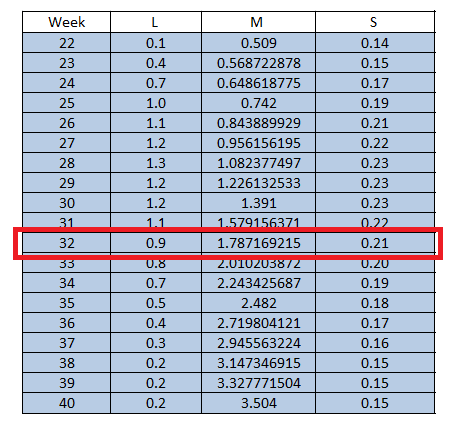

Gráfica de comparación de peso al nacer, a la entrada al PMC y a la semana 40
El objetivo de esta representación es observar el cambio en peso de los niños en 3 puntos específicos: al nacer, a la entrada al PMC y a la semana 40.
En la gráfica se presentan tres ejes verticales para representar cada uno de los pesos con escala en desviaciones estándar, lo que quiere decir que el peso al nacer, el peso a la entrada al PMC y el peso a la semana 40 de cada niño ha sido normalizado a desviaciones estándar. El proceso que se lleva a cabo para la normalización de estas medidas es el siguiente:
-
Partiendo de la siguiente fórmula:
En donde:
X = peso en kilogramos
M = media
L = constante
S = constante
Z = desviación estándar
Los valores M, L, S son tomados de las siguientes tablas de Fenton una para Niñas y otra para Niños, por edad gestacional:
-
Despejando la formula anterior para hallar desviación estándar a partir del peso de obtiene:
-
Así por ejemplo se tienen los siguientes datos:
Género: Niña
Peso al nacer: 1363.0
Semana gestacional: 32
Peso a la entrada al PMC: 1890.0
Semana a la entrada al PMC: 37
Peso a la semana 40: 2500
Calculo peso al nacer:

Calculo peso a la entrada al PMC:
Calculo peso a la semana 40:
-
De acuerdo a los valores obtenidos anteriormente el comportamiento del peso de la niña seleccionada es el siguiente:
En esta sección se presenta una gráfica inicial o gráfica resumen que muestra el promedio por año en desviaciones estándar de: peso al nacer, peso a la entrada al PMC y peso a la semana 40 para niños (azul) y niñas (rosado) de acuerdo a los parámetros seleccionados en la página inicial.
A través del siguiente componente pueden generarse nuevas graficas que permiten hacer comparaciones entre diferentes muestras:
Cada cuadro corresponde a una semana gestacional o año de nacimiento que puede ser seleccionado o deseleccionado, el botón permite una selección o deselección rápida de todos los botones.
La siguiente selección por ejemplo muestra: el peso al nacer, peso a la entrada al PMC y peso a la semana 40 en desviaciones estándar, para los niños con semana gestacional 32 nacidos en los años 2006, 2007, 2008, 2009 o 2010:
En la anterior gráfica se observan los pesos en desviaciones estándar de cada uno de los niños y niñas que nacieron en la semana 32 entre los años 2006 y 2010.
Las gráficas que se generen se mostraran una debajo de otra con el fin de permitir la comparación entre ellas:
En la anterior gráfica se observan los pesos en desviaciones estándar de cada uno de los niños y niñas que nacieron en la semana 32 entre los años 2011 y 2015.